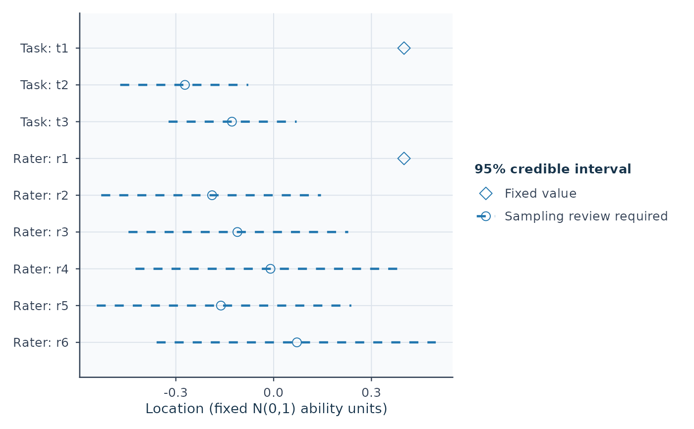

Read an exported Bayesian measurement summary and optional joint draws
Source:R/api-posterior-summary.R, R/api-plotting-posterior.R
read_mfrm_posterior.RdBring a saved Stan/brms summary (and, when available, its checksum-bound
posterior-draws.rds) back into mfrmr for shared-calibration contrasts,
arbitrary equal-tailed credible levels, figures and reports without loading
either sampling backend or running an estimator.
Usage
read_mfrm_posterior(path, draws = c("auto", "require", "none"))
# S3 method for class 'mfrm_posterior_summary'
plot(
x,
quantity = c("location", "ability", "step_offset", "slope", "log_slope",
"population_mean", "population_sd", "contrast"),
facet = NULL,
contrasts = NULL,
level = x$level,
view = c("intervals", "draws"),
draw = TRUE,
reference = NULL,
preset = "standard",
show_legend = TRUE,
title = NULL,
subtitle = NULL,
caption = NULL,
...
)
# S3 method for class 'mfrm_posterior_summary'
print(x, ...)
# S3 method for class 'mfrm_posterior_summary'
summary(object, contrasts = NULL, level = object$level, ...)
# S3 method for class 'mfrm_posterior_summary'
confint(object, parm = NULL, level = object$level, contrasts = NULL, ...)
# S3 method for class 'mfrm_posterior_summary'
as.data.frame(
x,
row.names = NULL,
optional = FALSE,
...,
what = c("parameters", "contrasts", "draws", "contrast_draws"),
contrasts = NULL,
level = x$level
)Arguments
- path
An export directory containing
posterior-summary.rdsand its matchingmodel-data.rds, or the path to that summary file.- draws
One of
"auto"(default: attachposterior-draws.rdswhen present alongsideposterior-summary.rds, or return the marginal summary alone when absent),"require"(requireposterior-draws.rds, falling back tofit.rdswhen the matching backend is installed), or"none"(ignore saved joint draws and read only the marginal summary).- x
-
Output from
read_mfrm_posterior().Also for
print()andas.data.frame(): A savedmfrm_posterior_summary. - quantity
One of
"location"(default unlesscontrastsis supplied),"ability","step_offset","slope","log_slope","population_mean","population_sd", or"contrast". Population quantities require an estimated-population export;"contrast"requires attached or suppliedcontrasts. Quantities with different units are not mixed.- facet
Optional facet/owner names to retain;
NULLretains all for the selected quantity. Step rows usefacet = "Step owner", or the named step facet for an extended two-family bundle, and retain their owner labels and category transitions in the plotted table.- contrasts
Optional contrast specification evaluated on shared chain-by-iteration draws (
posterior-draws.rdsrequired): a character vector of facet/owner names (for example"Rater"or"Step owner"), adata.framewithlhsandrhs(plus optionalfacet,quantity,label, andscale = c("difference", "ratio")), or a non-empty named list of numeric weight vectors keyed byvariableor"Facet: Level".- level
Equal-tailed posterior credible interval level strictly between
0and1(defaults toobject$level, initially0.95). Changinglevelrequires attached joint draws (posterior-draws.rds) and is rejected rather than approximated from marginal SDs when draws are absent.- view
One of
"intervals"(default: posterior means and equal-tailed credible intervals) or"draws"(empirical MCMC draw distribution slabs behind the intervals; requiresposterior-draws.rdsand fails closed when joint draws are absent).- draw
Logical;
FALSEreturns plot data without opening a device.- reference
Optional finite vertical reference;
NULLomits it (forquantity = "contrast", defaults to0for linear differences and1for slope ratios unless explicitly set toNULL). Zero for locations and one for relative slopes are references, not standards of performance or rater quality.- preset
A package plot preset, such as
"standard"or"monochrome".- show_legend
Logical; show interval/fixed-value symbols.
- title, subtitle, caption
Optional returned text. Defaults omit it. Text is not drawn by default; retrieve it with
plot_data().- ...
Unused.
- object
A saved
mfrm_posterior_summary.- parm
Optional saved parameter names (for example
"locations[1]"), row indices in$parameters, or"contrasts"when contrasts are attached.NULLreturns mapped model parameters (unlesscontrastsis supplied).- row.names
Optional row names passed to
base::as.data.frame().- optional
Logical passed to
base::as.data.frame().- what
Component to extract as a
data.frame:"parameters"(default),"contrasts"(posterior contrast summary table),"draws"(long chain-by-iteration parameter draws), or"contrast_draws"(long chain-by-iteration contrast draws).
Value
An mfrm_posterior_summary containing unrounded parameter and
diagnostic tables, source settings, priors, mappings and constraints, plus
algebraic basis metadata ($bundle_spec), new-Person scoring metadata
($scoring_spec), and, when joint draws are attached, validated
chain-by-iteration draws ($draws) and optional contrast tables
($contrasts). Extended two-family bundles also retain named facet roles
and the prior's slope reference in $model_roles and $source.
For plot(): Invisibly, a ggplot object; plot_data() extracts the
exact long table (and draws when view = "draws"), source settings,
parameter or contrast identities, interval statuses and interpretation notes,
and as_ggplot() remains idempotent. No posterior draws, densities or
raincloud samples are ever reconstructed from marginal summaries.
Details
Run the exported bundle's Rscript run.R --summarize first.
Current summarize.R writes both posterior-summary.rds and
posterior-draws.rds, binding them by MD5 checksums to model-data.rds.
The reader checks the recorded model-data and summary checksums, parameter
mappings, fixed-value semantics, free-to-constrained affine/Helmert basis
reconstruction, and consistency of the saved sampling checks. Older
summaries without a checksum (or without posterior-draws.rds when joint
draws are needed) can be regenerated with the current run.R and
summarize.R using --summarize; no new sampling is needed. Keep the
original model-data.rds bytes with the fit when moving an export directory.
When only posterior-summary.rds is present, the object contains marginal
95% summaries, not joint posterior draws: parameter covariance is never
fabricated from marginal SDs, and requests for contrasts, other credible
levels, or empirical draw plots fail closed. When posterior-draws.rds is
attached, summary(x, contrasts = ..., level = ...), confint(), plot(),
as.data.frame(), and mfrm_report() evaluate linear or ratio contrasts
directly across the shared chain-by-iteration posterior draws while checking
algebraic constraint bases (fixed_anchor and fixed_by_constraint roles
are determined from the exported basis matrices, never from sample variance).
Posterior SDs, equal-tailed credible intervals, and tail probabilities
(prob_gt_zero, prob_lt_zero) are Bayesian summaries conditional on the
model, priors, and fixed anchors; they are not frequentist standard errors,
Wald confidence intervals, two-sided p-values, or MML likelihood-ratio tests.
Estimated-population one-family Stan summaries retain the population mean
and SD as reported parameters. Their schema-2 files require this newer reader;
existing fixed-population schema-1 summaries remain supported. Use
plot(x, quantity = "population_sd") to inspect between-Person variation
on the native metric. This SD is not an individual Person standard error.
Fixed anchors and constraint-determined values have no estimated SD or
interval (NA). External calibration uncertainty has not been propagated.
summary() returns the validated object (recomputing credible bounds or
attaching $contrasts when requested); printing is compact.
The bundled synthetic examples use short chains and require sampling
review; their numbers are workflow illustrations, not assessment findings.
plot() method: Plot saved posterior estimates, contrasts, and credible intervals
For plot(): These are equal-tailed posterior credible intervals
at level, not frequentist confidence intervals. Dashed intervals and open
circles mark estimates whose sampling screen requires review; solid
intervals mean that no sampling flag was detected, not that inference is
validated. Open diamonds mark fixed anchors/constraint-determined values
without an interval. Crosses mark estimated points without an available
interval. Missing points retain their labels and are never replaced by zero.
Original row order, labels and endpoints are preserved.
Session plot defaults
See mfrmr_visual_diagnostics for options(mfrmr.plot_preset), argument
precedence, and appearance when saving or reusing a plot.
See also
export_mfrm_model(), predict.mfrm_posterior_summary(),
plot.mfrm_posterior_summary()
read_mfrm_posterior(), mfrm_report()
Examples
# 1. Marginal summary bundle (no joint draws file):
directory <- system.file("extdata", "posterior-example", package = "mfrmr")
posterior <- read_mfrm_posterior(directory)
summary(posterior) # Read the decision and next action before the estimates.
#> External Bayesian measurement summary
#> GPCM | Stan | Fixed N(0,1)
#> Review sampling before interpreting intervals
#> Why: Fewer than four chains; Chain mixing (R-hat) needs review; Effective sample size for central summaries needs review
#> Next: inspect $checks, then model fit, prior sensitivity and target-specific MCSE.
#> 53 mapped parameters; fixed values have no estimated interval.
#> Parameter Role Mean Lower Upper Interval
#> Person: p001 estimated -0.403 -1.414 0.543 Sampling review
#> Task: t1 fixed_anchor 0.400 NA NA Fixed value
#> Task: t2 estimated -0.272 -0.471 -0.078 Sampling review
#> Step owner: r1 | 0 -> 1 fixed_anchor 0.250 NA NA Fixed value
#> Step owner: r1 | 1 -> 2 estimated -1.061 -1.997 -0.058 Sampling review
#> Task: t1 estimated 0.635 0.445 0.887 Sampling review
#> Use $parameters, confint(x), plot(x), or mfrm_report(x). Sampling checks do not establish model validity.
intervals <- confint(posterior)
head(intervals[, c("facet", "level", "value_role", "lower", "upper", "interval_status")])
#> facet level value_role lower upper
#> 2 Person p001 estimated -1.4139833 0.5430092
#> 3 Person p002 estimated -1.8840950 -0.7452628
#> 4 Person p003 estimated -1.2022894 0.6702318
#> 5 Person p004 estimated -1.7130268 0.1526192
#> 6 Person p005 estimated -0.5258744 0.2955422
#> 7 Person p006 estimated -2.7862091 -0.3048554
#> interval_status
#> 2 computed_sampling_review_required
#> 3 computed_sampling_review_required
#> 4 computed_sampling_review_required
#> 5 computed_sampling_review_required
#> 6 computed_sampling_review_required
#> 7 computed_sampling_review_required
# 2. Joint posterior draws bundle: shared-calibration contrasts and custom level:
draws_dir <- system.file("extdata", "posterior-draws-example", package = "mfrmr")
joint_post <- read_mfrm_posterior(draws_dir)
contrasted <- summary(joint_post, contrasts = "Rater", level = 0.90)
contrasted$contrasts[, c("label", "value_role", "mean", "lower", "upper",
"prob_gt_zero", "interval_status")]
#> label value_role mean lower upper prob_gt_zero
#> 1 Rater: R01 - R02 estimated -0.05159728 -0.3488806 0.2233518 0.39
#> 2 Rater: R01 - R03 estimated 0.05159728 -0.2233518 0.3488806 0.61
#> 3 Rater: R02 - R03 estimated 0.10319455 -0.4467036 0.6977612 0.61
#> interval_status
#> 1 computed_sampling_review_required
#> 2 computed_sampling_review_required
#> 3 computed_sampling_review_required
head(as.data.frame(contrasted, what = "draws"), 4)
#> draw chain iteration variable quantity facet level transition
#> 1 1 1 1 lp__ internal_coordinate <NA> <NA> <NA>
#> 2 2 1 2 lp__ internal_coordinate <NA> <NA> <NA>
#> 3 3 1 3 lp__ internal_coordinate <NA> <NA> <NA>
#> 4 4 1 4 lp__ internal_coordinate <NA> <NA> <NA>
#> value_role role value
#> 1 sampling_coordinate free_coordinate -91.95981
#> 2 sampling_coordinate free_coordinate -87.01269
#> 3 sampling_coordinate free_coordinate -82.57447
#> 4 sampling_coordinate free_coordinate -84.16060
report <- mfrm_report(contrasted, style = "apa", study_context = c(
score_direction = "Higher coded scores indicate more favorable performance"))
summary(report, view = "reader")
#> mfrmr Report Summary
#>
#> Overview
#> Style OverallStatus
#> apa review
#> FirstAction
#> Read report$tables$sampling_review; resolve recorded sampling concerns before interpretation.
#> ReviewAreas NotComputedAreas CaveatAreas OptionalAreas UnavailableAreas
#> 0 0 0 0 0
#> OkAreas SourceInclude
#> 0 mfrm_posterior_summary
#>
#> First screen
#> Area Status Readiness
#> Overall review Review sampling before interpreting intervals
#> MainIssue
#> Review sampling before interpreting intervals Fewer than four chains; Chain mixing (R-hat) needs review; Effective sample size for central summaries needs review; Effective sample size for tail summaries needs review
#> NextAction
#> Read report$tables$sampling_review; resolve recorded sampling concerns before interpretation.
#> PrimaryRoute
#> report$tables$sampling_review; report$tables$contrasts; plot(x, quantity = 'contrast'); confint(x, parm = 'contrasts')
posterior <- read_mfrm_posterior(system.file(
"extdata", "posterior-example", package = "mfrmr"))
p <- plot(posterior, quantity = "location", draw = FALSE)
plot_data(p, "table")
#> variable quantity facet level transition value_role mean
#> 34 locations[1] location Task t1 <NA> fixed_anchor 0.400000000
#> 35 locations[2] location Task t2 <NA> estimated -0.272092290
#> 36 locations[3] location Task t3 <NA> estimated -0.127907710
#> 37 locations[4] location Rater r1 <NA> fixed_anchor 0.400000000
#> 38 locations[5] location Rater r2 <NA> estimated -0.188825025
#> 39 locations[6] location Rater r3 <NA> estimated -0.111174975
#> 40 locations[7] location Rater r4 <NA> estimated -0.009676254
#> 41 locations[8] location Rater r5 <NA> estimated -0.161726463
#> 42 locations[9] location Rater r6 <NA> estimated 0.071402718
#> median sd lower upper
#> 34 0.40000000 NA NA NA
#> 35 -0.27153571 0.09911457 -0.4706603 -0.07768350
#> 36 -0.12846429 0.09911457 -0.3223165 0.07066032
#> 37 0.40000000 NA NA NA
#> 38 -0.19312417 0.17618477 -0.5288888 0.14526793
#> 39 -0.10687584 0.17618477 -0.4452679 0.22888878
#> 40 -0.02152561 0.22169470 -0.4239602 0.40227731
#> 41 -0.16384775 0.19778027 -0.5427963 0.23845038
#> 42 0.07207030 0.21861362 -0.3590169 0.49738638
#> interval_status sampling_review fixed_value
#> 34 fixed_value_no_interval sampling_review_required 0.4
#> 35 computed_sampling_review_required sampling_review_required NA
#> 36 computed_sampling_review_required sampling_review_required NA
#> 37 fixed_value_no_interval sampling_review_required 0.4
#> 38 computed_sampling_review_required sampling_review_required NA
#> 39 computed_sampling_review_required sampling_review_required NA
#> 40 computed_sampling_review_required sampling_review_required NA
#> 41 computed_sampling_review_required sampling_review_required NA
#> 42 computed_sampling_review_required sampling_review_required NA
#> reference
#> 34 Saved facet centering constraints; zero is not a performance standard.
#> 35 Saved facet centering constraints; zero is not a performance standard.
#> 36 Saved facet centering constraints; zero is not a performance standard.
#> 37 Saved facet centering constraints; zero is not a performance standard.
#> 38 Saved facet centering constraints; zero is not a performance standard.
#> 39 Saved facet centering constraints; zero is not a performance standard.
#> 40 Saved facet centering constraints; zero is not a performance standard.
#> 41 Saved facet centering constraints; zero is not a performance standard.
#> 42 Saved facet centering constraints; zero is not a performance standard.
#> direction rhat ess_bulk ess_tail
#> 34 Higher values favor lower coded scores. NA NA NA
#> 35 Higher values favor lower coded scores. 1.002031 1539.6019 400.6955
#> 36 Higher values favor lower coded scores. 1.002031 1539.6019 400.6955
#> 37 Higher values favor lower coded scores. NA NA NA
#> 38 Higher values favor lower coded scores. 1.002963 861.4291 522.4420
#> 39 Higher values favor lower coded scores. 1.002963 861.4291 522.4420
#> 40 Higher values favor lower coded scores. 1.004839 1077.7120 579.7112
#> 41 Higher values favor lower coded scores. 1.003883 928.3332 388.5267
#> 42 Higher values favor lower coded scores. 1.002321 1102.4267 571.8319
#> mcse_lower mcse_upper role interval_computed
#> 34 NA NA reported_parameter FALSE
#> 35 0.018775975 0.006029796 reported_parameter TRUE
#> 36 0.005798675 0.018034816 reported_parameter TRUE
#> 37 NA NA reported_parameter FALSE
#> 38 0.013228350 0.031741620 reported_parameter TRUE
#> 39 0.033730575 0.011834855 reported_parameter TRUE
#> 40 0.029088910 0.019302735 reported_parameter TRUE
#> 41 0.014366700 0.027675005 reported_parameter TRUE
#> 42 0.022163675 0.016108135 reported_parameter TRUE
#> endpoint_mcse_fraction Display Label Y
#> 34 NA Fixed value Task: t1 9
#> 35 0.04777884 Sampling review required Task: t2 8
#> 36 0.04589282 Sampling review required Task: t3 7
#> 37 NA Fixed value Rater: r1 6
#> 38 0.04708344 Sampling review required Rater: r2 5
#> 39 0.05003373 Sampling review required Rater: r3 4
#> 40 0.03520647 Sampling review required Rater: r4 3
#> 41 0.03542416 Sampling review required Rater: r5 2
#> 42 0.02587995 Sampling review required Rater: r6 1
if (requireNamespace("ggplot2", quietly = TRUE)) as_ggplot(p)

joint_post <- read_mfrm_posterior(system.file(
"extdata", "posterior-draws-example", package = "mfrmr"))
pc <- plot(joint_post, contrasts = "Rater", level = 0.90,
view = "draws", draw = FALSE)
plot_data(pc, "table")[, c("label", "value_role", "mean", "lower", "upper")]
#> label value_role mean lower upper
#> 1 Rater: R01 - R02 estimated -0.05159728 -0.3488806 0.2233518
#> 2 Rater: R01 - R03 estimated 0.05159728 -0.2233518 0.3488806
#> 3 Rater: R02 - R03 estimated 0.10319455 -0.4467036 0.6977612